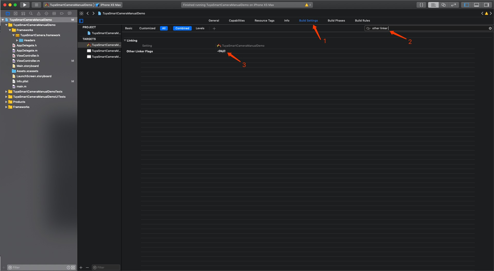

手动集成
点击这里下载SDK，将 TuyaSmartCamera.framework 添加到工程目录，添加完成后，工程目录类似于下图:

然后选择工程，对应的 Target， General 设置的下面，Linked Frameworks and Libraries 中添加系统依赖库，所需依赖库有：“Photos.framework”，“libresolv.tbd”，“libbz2.tbd”，“libiconv.tbd”，“libz.tbd”，“libc++.tbd”。如下图：

添加完成后，切换到 Build Settings，搜索框中输入“other linker”，在Other Linker Flags中，添加 “-ObjC”，如下图：
